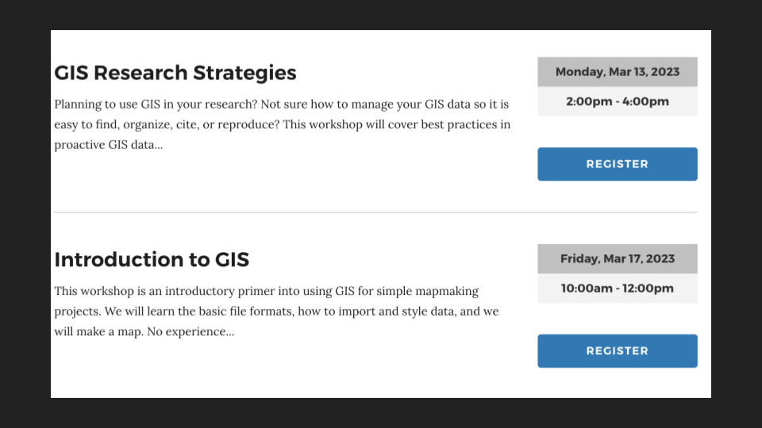
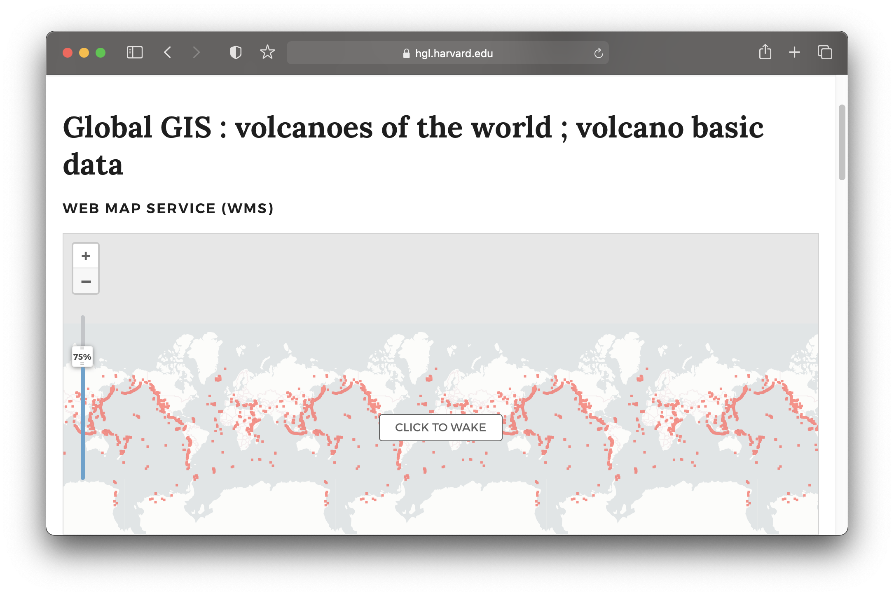
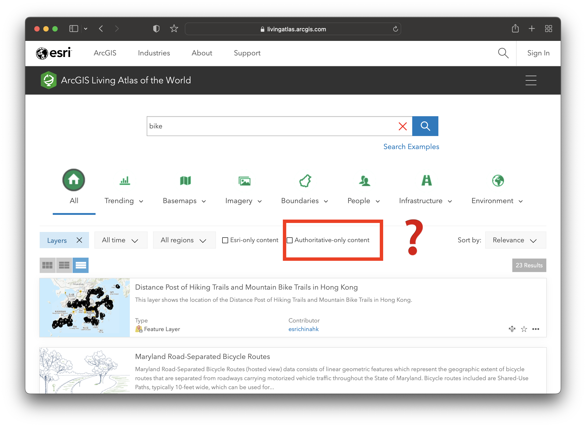
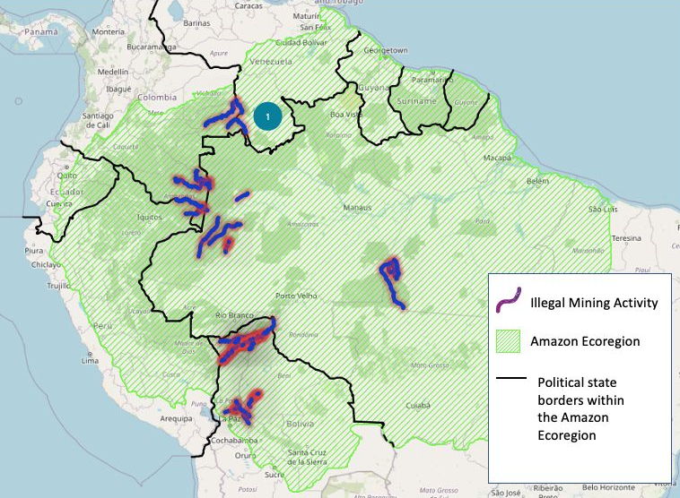

Spring 2023 Harvard Map Collection
Trying to understand things encodes them sometimes

New technologies and ethical grey space
Being up front in your maps/data about your motivations

Letting people in to allow critique


Harvard Map Collection workshops

What gets collected






Next steps
- Get help with maps or GIS datasets by emailing maps@harvard.edu .
- Catch up with Belle belle_lipton@harvard.edu .
- Sign up for workshops using the library calendar.
- Come to GIS office hours to hang out and make maps Tuesdays 10-noon.